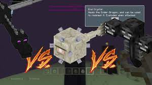

Minecraft er en av de mest populære spillene og mitt yndlingspill og Jeg spiller det hver eneste dag.
Minecraft var lagd i 2009 i mai og er forsatt en av de mest populære spillene.
Minecraft er et overlevelses spill som man kan bli bedre og bedre i noen har spilt på en bane i fem år.
I minecraft kan man spille med venner og man kan ha på cheats og med cheats kan man få alt med ett klikk.
Det jeg liker mest med minecraft er slossing på multiplayer servere der er det om å gjøre og drepe de andre.
Når man spiller minecraft er det om å gjøre å drepe de 3-4 bossene og de beste tingene er netherite armour som har protection 4 enchantment.
ovenfor her er en vidieo om en som har overlevd minecraft 100 hundre dager uten å dø
10 ting jeg liker med minecraft
man kan spille med venner
man kan prøve å overleve
man kan sloss med bosser
du kan ha dyr
man kan bygge store hus
du kan drepe vennene dine
hvis du vil kan du ha krig
man kan bake kaker
du kan starte en farm
og man kan dra til andre dimensjoner
Bosser
Det finnes tre bosser og snart fire i minecraft.
Hovedbossen heter enderdragon og er i end dimensjonen når man dreper den så kan man få tilgang til det beste tingene i spille.
En boss til er the wither som man kan lage ved å drepe witherskeleton for å få wither skull.
Når man har tre av de så kan man plassere de oppe på fire soul sand så blir bossen laget.
Når den dør gir den deg en nether star som blir brukt til beacon som kan gi deg krefter når du er nær den
Den siste bossen som finnes i dag heter elder guardian som man finner i et tempel under vann.
Elder guardian er den letteste bossen og man kan finne masse gull i templet dens.
Når man dreper elder guardian så får man svamp som kan suge til seg vann
Den nyeste bossen som skal komme ut i den nye versjonen heter the warden.
The warden er den farligste bossen som kan drepe deg med 3 slag, men den er blind.
Bossen kan besykkte ett rom som gir deg masse brae ting men den er livs farlig.
Den bossen jeg liker best av alle bossene må være the warden siden den er ny og spennende.

viss du ønsker deg minecraft så kan du gå in på minecraft.net det koster 229kr for java og 309kr+ for windows10 edition.
Dyr
Det finnes mange dyr i minecraft og de er veldig viktige siden da kan man få mat.
Dyr gir mange forskjelige ting feks mat ull og skinn. det viktigste dyret er nokk ku siden da kan man få skinn.
Skinn kan bli brukt til å lage enchantment table og bøker/ bok hyller.